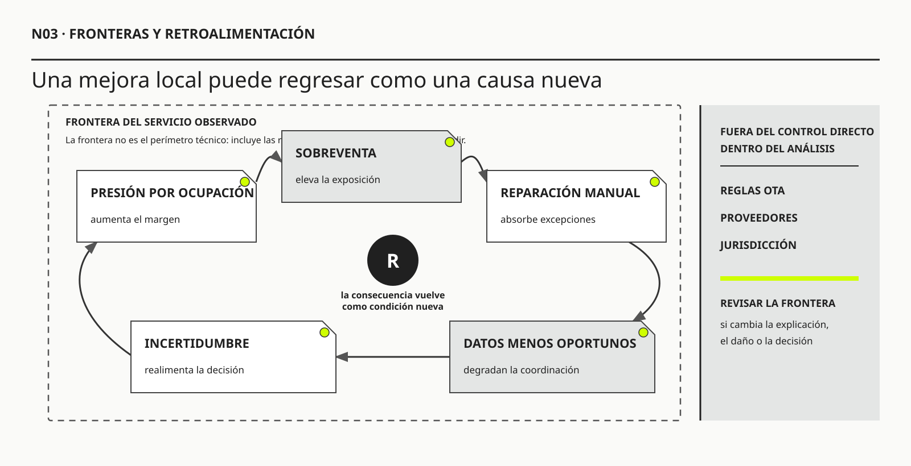

01
01C. West Churchman
OBRA PRINCIPAL UTILIZADAThe Systems ApproachDell Publishing, 1968

Toda frontera es una decisión analítica, operativa y política.
Fronteras, retroalimentación y efectos no intencionales
Ruta de lectura: problema, distinciones, decisiones, prueba, transferencia y preparación para N04.

Nota. SIN NUM. identifica los aparatos de orientación y referencia que no integran la secuencia argumental.
Seis voces principales para ampliar, contrastar y discutir esta lectura.
01Dell Publishing, 1968
 02
02Kluwer Academic / Plenum, 2000
 03
03Chelsea Green Publishing, 2008
 04
04Currency · edición revisada, 2006
 05
05NIST AI 100-1, 2023
 06
06NIST AI 600-1, 2024
N03 no resume estas fuentes ni las convierte en una receta. Las pone en tensión para construir juicio profesional.
¿Dónde termina el sistema relevante y quién responde por las consecuencias que quedan fuera de la frontera elegida?

El efecto de la intervención vuelve como condición de la siguiente decisión.
Durante dos semanas, el nuevo check-in digital de Hotel Horizonte parece una decisión indiscutible. Quienes completan el formulario antes de llegar pasan menos tiempo frente al mostrador. El tablero muestra una caída del promedio de atención, la tasa de adopción supera la meta del piloto y los comentarios favorables mencionan velocidad. En la reunión del viernes, Dirección pregunta cuánto podría reducirse la dotación nocturna si el comportamiento se mantiene.
Lucía Ferreyra, jefa de Recepción, no discute el dato. Discute lo que el dato deja afuera. El reloj comienza cuando se abre la reserva en el PMS, no cuando una persona se incorpora a la fila. Los formularios incompletos se derivan a un circuito manual y ya no cuentan como check-in digital. Quienes llegan sin batería, sin conectividad o con una reserva que exige corregir una garantía aparecen como excepciones. El promedio describe bien un tramo del proceso, pero todavía no permite afirmar que el hotel necesita menos capacidad de atención.
La tercera semana concentra la ocupación de un congreso. A las 22:17 llega una familia cuya reserva promete dos habitaciones comunicadas. El formulario fue completado y el sistema emitió una llave móvil. Una de las habitaciones figura liberada, aunque Mantenimiento había dejado asentado en otro canal que la cerradura debía revisarse. La segunda todavía no fue inspeccionada. La llave abre una puerta, pero la promesa no puede cumplirse. Lucía necesita localizar una alternativa, autorizar un cambio de categoría y explicar por qué una llegada supuestamente resuelta exige empezar de nuevo.
Mientras Recepción repara el caso, otras personas esperan. Algunas habían completado el formulario; otras no. El indicador de duración del check-in sigue midiendo únicamente el tiempo dentro de la pantalla. La conversación con Mantenimiento, la búsqueda de habitaciones, la contención de la familia y la cola que crece no pertenecen a la frontera de medición. Tampoco aparece el trabajo de Housekeeping, que empezó a marcar antes ciertos estados para responder a los horarios de llegada informados por la aplicación.
El lunes siguiente, el equipo podría atribuir el episodio a una cerradura defectuosa. La explicación es plausible y ofrece una acción concreta. También podría concluir que el piloto fracasó y volver al proceso anterior. Ambas respuestas llegan demasiado pronto. La primera reduce la situación a su componente más visible. La segunda juzga toda la intervención por un caso crítico sin reconstruir el mecanismo. Lo que se necesita es revisar la frontera que permitió declarar éxito.
Federico Müller, responsable de Tecnología y Datos, imprime la primera versión del mapa. Comienza con el formulario, sigue por el PMS y termina en la emisión de la llave. El dibujo coincide con el alcance contratado. Lucía agrega a mano tres relaciones: Housekeeping declara un estado que el PMS interpreta; Mantenimiento puede invalidarlo; Recepción conserva autoridad informal para reparar. Después extiende el comienzo hasta la promesa comercial y el final hasta el acceso efectivo a una habitación adecuada. El mapa deja de representar una transacción y empieza a representar un servicio.
La ampliación cambia la lectura del piloto. La automatización sí reduce carga en llegadas simples. A la vez, concentra excepciones más complejas, modifica el comportamiento de otras áreas y hace que una reducción prematura de dotación pueda eliminar la capacidad que compensa sus límites. El efecto de la intervención vuelve como condición de la siguiente decisión. Eso es retroalimentación: la acción no termina cuando produce su resultado inmediato; modifica el sistema que luego la evalúa y la utiliza.
También cambia la pregunta sobre responsabilidad. El proveedor de la llave puede responder por disponibilidad técnica. Mantenimiento responde por la cerradura. Housekeeping responde por limpieza. Comercial responde por la condición ofrecida. Sin embargo, la familia recibió una sola promesa. Dividir tareas no divide automáticamente la obligación de detectar una contradicción, decidir una alternativa y reparar el incumplimiento.
El nuevo mapa no incluye todo el hotel ni pretende anticipar cada consecuencia. Conserva las relaciones que pueden cambiar el diagnóstico o la decisión: estados de habitación, autoridad, capacidad nocturna, canales alternativos, trabajo desplazado y experiencia hasta el acceso. Declara además qué queda afuera y qué señal obligaría a ampliar. La frontera sigue siendo un recorte, pero ahora puede defenderse.
HH-03 acompañará toda la lectura porque permite observar tres movimientos diferentes. Primero se delimita para poder investigar. Después se estudia cómo los efectos regresan mediante demoras, acumulaciones y respuestas adaptativas. Finalmente se decide si conviene sostener, reducir o ampliar la frontera, y bajo qué condiciones puede escalarse una intervención. El objetivo no es producir el mapa más grande. Es evitar que una mejora local sea confundida con una mejora del sistema.
Toda frontera es una decisión analítica, operativa y política. Permite concentrar la intervención, pero también determina qué mecanismos se estudian, qué resultados cuentan, quién participa y dónde puede desplazarse trabajo o daño. Una frontera rigurosa se define para una pregunta, declara exclusiones, examina retroalimentaciones y se revisa cuando la evidencia muestra que optimizar lo incluido deteriora el sistema mayor.
N02 mostró que el sistema de información no cabe en una aplicación y propuso construir una frontera móvil alrededor de la capacidad que se desea sostener. N03 recibe ese mapa como una hipótesis, no como una conclusión. Una vez elegidos los elementos y relaciones relevantes, todavía falta preguntar qué consecuencias produce el recorte, qué efectos pueden regresar y qué obligación conserva la intervención sobre aquello que dejó afuera.
El avance es deliberado. N02 respondió qué sistema conviene mirar. N03 examina qué hace esa mirada y cuándo debe corregirse. N04 trabajará después sobre el estatus de las afirmaciones y la evidencia utilizada para justificar el cambio. Por eso esta lectura nombra señales y explicaciones rivales, pero no desarrolla todavía una teoría completa de observación, dato, inferencia e hipótesis.
En Ingeniería de Software aprendimos a definir alcance, interfaces y contexto de un producto. Esa disciplina evita que un proyecto intente resolverlo todo. Aquí conservamos esa necesidad y agregamos otra pregunta: ¿qué consecuencias vuelve invisibles el alcance elegido? Una interfaz declara qué intercambia un componente; una frontera metodológica declara, además, qué actores, demoras y efectos consideraremos al explicar y decidir.
Quien ya cursó Ingeniería de Software reconoce una secuencia familiar: identificar actores, especificar requisitos, modelar procesos, definir interfaces, construir, probar y operar. N03 no invalida esa secuencia. La coloca dentro de una pregunta anterior: ¿cuál es el sistema relevante para formular esos requisitos y juzgar el resultado? Un requisito impecable puede automatizar con precisión una frontera equivocada.
Supongamos que Hotel Horizonte escribe: “Cuando Housekeeping marque una habitación como liberada, el PMS deberá habilitarla para asignación en menos de treinta segundos”. El requisito es verificable. Sin embargo, todavía no sabemos si “liberada” significa limpieza terminada, inspección aprobada, cerradura operativa, ausencia de bloqueo de mantenimiento o posibilidad comercial de asignación. Tampoco sabemos qué ocurre si esos estados discrepan. La calidad sintáctica del requisito no resuelve la calidad del recorte.
El paso adicional consiste en declarar una unidad de resultado. En vez de preguntar sólo si el PMS propagó un dato, preguntamos si el sistema completo pudo sostener una promesa: entregar una habitación adecuada, segura y disponible en el momento acordado. Esa unidad obliga a incluir relaciones que una especificación puramente técnica podría tratar como externas: autoridad de Housekeeping, bloqueos de Mantenimiento, reglas comerciales, tiempos de inspección y capacidad de reparación.
Esto no significa convertir cada historia de usuario en un tratado organizacional. Significa elegir profundidad según riesgo. Para corregir el color de un botón basta una frontera de producto. Para automatizar una decisión que puede dejar a una familia sin habitación a medianoche se necesita una frontera de servicio, responsabilidad y contingencia. La diferencia no es filosófica: cambia qué evidencia se exige antes de desplegar.
Un modo simple de construir el puente es completar cuatro frases antes de especificar:
En el ejemplo: la capacidad es alojar según la promesa; el PMS contribuye propagando estados; la promesa puede fallar si el significado de “liberada” difiere o si existe un bloqueo físico; y la frontera se revisará si aparecen reversiones, esperas o excepciones fuera del flujo digital. Recién entonces el requisito técnico queda conectado con una afirmación profesional defendible.
Este enfoque también mejora las pruebas. Una prueba unitaria verifica lógica local; una prueba de integración verifica intercambio; una prueba de servicio observa si los componentes coordinados producen el resultado; una prueba de frontera busca consecuencias desplazadas y actores excluidos. Ninguna reemplaza a las otras. Cada una responde una pregunta diferente.
Los problemas socio-técnicos se conectan con una cantidad potencialmente ilimitada de factores. El check-in de un hotel depende de reserva, habitación, identidad, pago, dotación, capacitación, edificio, transporte, clima, regulación y expectativa. Si todo pertenece al sistema con el mismo nivel de detalle, el análisis se vuelve inmanejable. Sin frontera no hay investigación proporcionada, responsabilidad operativa ni decisión posible.
Pero delimitar no es descubrir un borde natural. Es elegir qué relaciones serán tratadas como internas y cuáles como entorno para un propósito concreto. Una frontera puede ser válida para diagnosticar latencia de una pantalla e insuficiente para explicar la espera del huésped. Puede ser útil durante dos semanas y quedar invalidada por un incidente.
El profesional necesita sostener dos ideas a la vez: toda intervención requiere reducción; toda reducción produce puntos ciegos. El rigor no consiste en evitar el recorte, sino en hacerlo explícito y examinar sus consecuencias.
Define qué elementos y relaciones se incluyen para explicar una situación. Puede concentrarse en el ciclo de reserva, llegada y habitación, dejando afuera la adquisición comercial. Esa exclusión es razonable si la pregunta es por confiabilidad de la promesa, pero no si ciertas campañas venden beneficios que Operaciones no puede cumplir.
Define sobre qué componentes existe autorización o capacidad de cambio. El equipo puede modificar reglas internas y una integración, pero no el algoritmo de una OTA. La OTA sigue dentro del sistema analítico como dependencia aunque quede fuera del control directo.
Confundir ambas fronteras produce un error frecuente: como no podemos cambiar algo, dejamos de modelar su efecto. Una dependencia incontrolable puede ser precisamente la razón para diseñar contingencia, negociación contractual o límites de promesa.
Define quién responde por una decisión o resultado. Los contratos suelen fragmentarla: el hotel responsabiliza al canal, el canal al proveedor de conectividad, el proveedor al dato enviado. Para el huésped existe una única promesa. La arquitectura contractual puede no coincidir con la experiencia ni con la responsabilidad ética.
La intervención debe mostrar puntos donde responsabilidad formal y capacidad real están separadas. Asignar responsabilidad sin autoridad o información crea un control nominal.
Define desde cuándo y hasta cuándo se observa. Medir check-in hasta entregar una tarjeta excluye el tiempo previo de reserva y el posterior descubrimiento de una habitación inadecuada. Medir una devolución hasta ordenar el reintegro excluye el tiempo bancario y la confirmación del cliente.
Las fronteras temporales pueden mejorar artificialmente un indicador. Por eso deben alinearse con el outcome y conservar eventos que permitan reconstruir demoras.
Incluir o excluir actores afecta su capacidad de ser vistos. Una intervención sobre autoservicio puede considerar a “usuarios digitales” y tratar a quienes requieren ayuda como excepciones. Esa frontera convierte una población real en desviación. Un proyecto de optimización de reparto puede modelar vehículos y destinos, pero excluir condiciones de conductores, seguridad vial o recepción. La eficiencia calculada se sostiene sobre costos transferidos.
La política de la frontera aparece en preguntas como:
Reconocer esta dimensión no implica que toda frontera sea manipuladora. Implica que debe poder discutirse con actores que conocen e incluso sufren sus consecuencias.
C. West Churchman formuló una advertencia decisiva para el enfoque de sistemas: comprender un sistema obliga a considerar aquello que su definición deja afuera y las perspectivas capaces de impugnarla. Gerald Midgley profundizó esa línea al mostrar que los juicios de frontera están ligados a valores y que las zonas marginales no son simples espacios vacíos. Allí pueden quedar actores, saberes y daños incluidos por una perspectiva y excluidos por otra. La frontera es política no porque toda decisión oculte una intención ilegítima, sino porque distribuye qué cuenta como relevante y quién puede cuestionarlo.
Esta tradición agrega una prueba al mapa técnico. No alcanza con preguntar si la frontera contiene los componentes que explican el flujo. También debe preguntarse quién gana capacidad de definir el resultado, quién queda representado como excepción y qué consecuencia se vuelve responsabilidad de otro. Dos mapas pueden contener las mismas aplicaciones y diferir en su tratamiento de una persona sin conectividad, de una trabajadora que absorbe excepciones o de un proveedor que controla una dependencia crítica.
Ejemplo breve: una bicisenda. Una bicisenda reduce conflictos en una avenida y traslada estacionamiento y carga a calles laterales. Medir sólo la avenida permite declarar éxito antes de observar el nuevo cuello de botella.
La primera versión del piloto incluía la carga anticipada, la validación dentro del PMS y la emisión de la llave. Esa frontera era adecuada para comprobar si la función técnica ejecutaba. No era adecuada para decidir sobre dotación ni para afirmar que la promesa de llegada había mejorado. La diferencia no se resuelve agregando cajas por precaución. Se resuelve relacionando frontera y decisión.
Para evaluar la ejecución técnica alcanza con preguntar si los datos requeridos llegaron, las reglas se aplicaron y la credencial fue emitida. Para evaluar el servicio deben incorporarse la espera completa, el significado de los estados, el acceso efectivo, las excepciones y la reparación. Para decidir sobre capacidad nocturna también deben observarse picos, mezcla de casos, trabajo transferido y funciones compensadoras del personal. Cada decisión exige una frontera distinta, aunque las tres puedan representarse como capas de un mismo mapa.
El error del equipo no fue comenzar con una frontera pequeña. Un piloto necesita un perímetro controlable. El error habría sido mantenerla cuando Dirección formuló una afirmación que excedía lo observado. La regla que aparece en HH-03 puede generalizarse: una frontera deja de ser defendible cuando se utiliza para sostener una decisión sobre actores, tiempos o consecuencias que ella misma excluye.

En una cadena lineal, A causa B y luego C. En un sistema, B puede modificar A. Esa retroalimentación puede reforzar una tendencia o equilibrarla.
Peter Senge utiliza el pensamiento sistémico para desplazar la atención desde hechos aislados hacia patrones y estructuras que los producen. Donella Meadows ofrece una formulación compatible: el comportamiento de un sistema surge de su estructura, especialmente de acumulaciones, flujos, información y retroalimentaciones. Para esta lectura, ambas perspectivas cumplen una función práctica. Evitan interpretar cada incidente como una anomalía independiente y orientan la búsqueda de relaciones que se sostienen o se corrigen a sí mismas a través del tiempo.
Un ciclo reforzador amplifica. En Hotel Horizonte, mayor presión por ocupación puede aumentar sobreventa. La sobreventa genera reubicaciones y trabajo manual. La carga deteriora la actualización de estados. Datos menos confiables aumentan la incertidumbre comercial, que justifica mayor margen de sobreventa. El ciclo se fortalece.
Un ciclo compensador limita. Si aumenta la espera, una supervisora puede reasignar personal, abrir otro puesto o flexibilizar un control. La espera disminuye, pero quizá a costa de abandonar otra actividad. El mecanismo protege el resultado visible mientras desplaza el costo.
Las retroalimentaciones explican por qué una política produce el efecto contrario. Si se premia cerrar tickets rápido, los equipos derivan o cierran prematuramente. Aumentan reaperturas y contactos, que elevan volumen y presión por cierre. Si se penaliza toda desviación de ruta, conductores siguen recomendaciones inseguras o dejan de registrar excepciones, reduciendo la evidencia que permitiría mejorar el sistema.
Una demora separa acción y efecto. Puede existir entre:
Cuando la demora no se representa, el equipo atribuye el resultado a la causa más cercana. Un incidente ocurre después de una actualización y se culpa al software, aunque una política de dotación de meses atrás haya reducido supervisión. Una mejora aparece inmediatamente después de lanzar una app y se le atribuye, aunque coincida con temporada baja.
La trazabilidad temporal no demuestra causalidad, pero evita relatos imposibles. El análisis debe buscar secuencia, mecanismos, exposiciones, alternativas y evidencia contradictoria.
Un efecto de primer orden es la consecuencia directa buscada: el huésped completa datos antes de llegar.
Un efecto de segundo orden surge de la adaptación: Recepción deja de verificar ciertos campos, el huésped cree que ya hizo check-in o Housekeeping recibe presión para confirmar antes.
Un efecto de tercer orden aparece cuando la organización cambia estructura o conducta: se reduce dotación por el supuesto ahorro; las excepciones quedan sin capacidad; los datos de autoservicio se usan para segmentar comercialmente; el canal se vuelve obligatorio.
No siempre es posible predecir niveles altos. La obligación metodológica es buscar efectos plausibles, diseñar señales y preservar capacidad de respuesta. Cuanto mayor sea el impacto y menor la reversibilidad, mayor debe ser el esfuerzo.
La distinción entre órdenes no indica importancia ni construye una secuencia automática. Un efecto directo puede ser grave y uno de tercer orden puede no ocurrir. Sirve para cambiar la pregunta. En el primer orden preguntamos si la función produce el resultado inmediato esperado. En el segundo observamos cómo las personas y las áreas adaptan su conducta frente a la intervención. En el tercero examinamos qué capacidades, incentivos o dependencias comienzan a consolidarse cuando esa adaptación se vuelve habitual. El salto entre niveles exige un mecanismo explicativo; no alcanza con enumerar consecuencias imaginables.
Ejemplo aplicado: check-in digital en Hotel Horizonte. El primer orden parece sencillo: parte de la información llega antes y recepción reduce minutos de carga. Para comprobarlo no basta contar formularios enviados. Hay que medir cuántos están completos, cuántos requieren corrección y cuánto tiempo total demanda cada llegada. El segundo orden aparece cuando huéspedes y personal interpretan la novedad. Algunas personas creen que completar el formulario garantiza una habitación lista; recepción empieza a confiar en datos que antes verificaba; Housekeeping recibe mensajes de prioridad derivados de horarios declarados; quienes no pueden usar el canal digital llegan a una fila más lenta. Ninguno de esos efectos es un “error de usuario”: son respuestas razonables a señales nuevas.
El tercer orden surge si la dirección toma decisiones estructurales a partir de esos resultados. Puede reducir dotación porque el promedio inicial bajó, hacer obligatorio el canal, tercerizar la verificación documental o utilizar los datos para segmentar ofertas. Entonces una prueba de interfaz se convierte en una decisión sobre capacidad, acceso y gobierno de información. Si el equipo sólo conserva la métrica del primer orden, interpretará como éxito una mejora que quizá depende de trabajo invisible, exclusión o fragilidad operativa.
Una forma práctica de anticipar sin pretender adivinar consiste en completar tres columnas antes del piloto: resultado directo esperado, adaptaciones plausibles y decisiones estructurales que el resultado podría habilitar. Para cada columna se acuerdan una señal, una persona responsable de interpretarla y una condición de revisión. En Horizonte, por ejemplo: tiempo total de llegada; cantidad y tipo de verificaciones desplazadas; y cualquier decisión de reducir puestos o volver obligatorio el autoservicio. La técnica no elimina sorpresas. Evita que las sorpresas importantes queden fuera de la frontera de observación.
Contrapunto: una represa. Una ciudad construye una defensa para evitar inundaciones y mide el éxito en el centro urbano durante la temporada húmeda. La obra cumple ese objetivo. Río abajo disminuyen sedimentos, se erosiona una costa y pequeños productores pierden agua en meses secos. Esos efectos no prueban que toda la intervención haya sido equivocada, pero muestran que la frontera espacial y temporal utilizada para evaluarla era insuficiente para la decisión de continuidad.
Cuando la ciudad modifica el régimen de agua, también cambia el comportamiento del territorio. Los productores adaptan cultivos, nuevas construcciones ocupan suelo que ahora se percibe seguro y aumenta la superficie impermeable. La intervención altera el entorno que había servido para diseñarla. El resultado vuelve como una condición de la próxima temporada. La misma estructura aparece en un sistema de información cuando una automatización modifica dotación, hábitos, canales alternativos o calidad de datos y luego es evaluada dentro del entorno que ella misma transformó.
Una intervención puede mejorar la métrica donde se aplica y mover la dificultad a otro lugar.
Detectar desplazamiento requiere ampliar la observación más allá del componente y la métrica. Debe incluir soluciones informales, canales alternativos, tiempo total, grupos afectados y métricas de equilibrio.
No existe una única escala. Una intervención puede trabajar con fronteras anidadas:
El análisis se mueve entre niveles según la pregunta. Una falla de interfaz puede resolverse localmente; una contradicción de inventario exige proceso/ecosistema. El error es usar siempre la frontera más grande o la más cómoda.
Las fronteras anidadas también distribuyen métricas. El tiempo de una interacción debe conectarse con resolución del proceso y outcome del servicio. De lo contrario, cada nivel optimiza sin coordinación.
Ejemplo breve: una mesa de ayuda. Cerrar tickets automáticamente mejora el tiempo medio, pero obliga a las personas a reabrir casos. La métrica termina alimentando el problema que afirma resolver.
Los indicadores también recortan el sistema. Elegir numerador, denominador, inicio, fin y población equivale a definir una frontera. Una métrica puede ser matemáticamente correcta y metodológicamente engañosa si excluye el tramo donde se produce el costo.
En Hotel Horizonte, “duración del check-in” podría medirse desde que recepción abre la reserva hasta que entrega la llave. Quedarían afuera la espera previa, la carga anticipada de datos, la búsqueda de una confirmación, el traslado hasta una habitación incorrecta y la reparación. Si se automatiza la pantalla, el indicador mejora aunque la experiencia total no cambie.
La frontera de medición debe corresponder con la promesa. Para “llegar y acceder a una habitación adecuada”, el reloj podría comenzar cuando el huésped intenta iniciar el proceso y terminar cuando dispone de la habitación prometida o de una alternativa aceptada. Aun así, un promedio ocultaría colas largas o diferencias entre grupos. Percentiles, distribución por condiciones y métricas de equilibrio ayudan a ver lo que el promedio recorta.
También debe declararse quién queda fuera del denominador. Medir adopción solo entre quienes completaron el proceso excluye abandono. Medir satisfacción solo entre quienes responden puede excluir a personas frustradas o sin acceso. El criterio no es recopilar todo, sino alinear población y período con la afirmación que se desea sostener.
Los diagramas de retroalimentación pueden convertirse en flechas plausibles sin evidencia. Para que un bucle sea útil, cada relación debe expresar dirección, mecanismo, condición y demora. “Más automatización produce menos trabajo” es demasiado general. ¿Qué tarea disminuye, cuál aparece, bajo qué volumen, para quién y después de cuánto tiempo?
Una relación causal no se valida porque un taller la considere razonable. Puede sostenerse provisionalmente con episodios, datos temporales, conocimiento operacional y comparación entre casos. Debe admitir explicaciones rivales. Si después de aumentar sobreventa aparecen más reubicaciones, la asociación es esperable, pero también pueden haber cambiado demanda, inventario o política de cancelación.
El bucle reforzador de sobreventa puede expresarse con mayor precisión. La presión por ingreso aumenta el margen de sobreventa. Un margen mayor eleva la exposición a conflicto cuando la tasa real de inasistencia difiere de la estimada. Los conflictos requieren reparaciones manuales; la carga y la fragmentación degradan la oportunidad de los estados; datos menos confiables amplían la incertidumbre; esa incertidumbre favorece decisiones conservadoras o márgenes adicionales. Cada vínculo sugiere evidencia diferente.
Los bucles compensadores merecen igual atención. Una supervisora que reasigna personal puede mantener bajo el tiempo visible y ocultar saturación. El indicador estable no demuestra ausencia de problema; puede demostrar que una capacidad humana absorbe variabilidad. Si se automatiza o reduce esa capacidad, el sistema pierde su compensación y aparece una inestabilidad antes contenida.
Por eso una intervención debe identificar no sólo ciclos dañinos, sino defensas y amortiguadores. Eliminar una solución informal o una revisión manual puede quitar una fuente de error y también una barrera protectora. La pregunta es qué función cumplía y cómo será reemplazada.
Un bucle causal se lee como una hipótesis narrativa que regresa a su punto de partida. Cada flecha debería poder traducirse a una frase completa: “cuando aumenta X, y las demás condiciones relevantes permanecen comparables, Y tiende a aumentar o disminuir después de cierta demora, porque opera este mecanismo”. Si no podemos completar la frase, la flecha es decoración.
Tomemos el ciclo de sobreventa. “Más presión comercial → más margen de sobreventa” puede sostenerse con política, entrevistas y decisiones históricas. “Más margen → más reubicaciones” requiere observar demanda, inasistencias, inventario y períodos. “Más reubicaciones → más trabajo manual” puede medirse en contactos, tiempo y excepciones. “Más trabajo manual → datos menos oportunos” necesita registros temporales o episodios reconstruidos. Finalmente, “datos menos oportunos → mayor incertidumbre comercial” debe mostrar cómo esa información interviene en la siguiente decisión. El círculo completo no se prueba con una sola correlación.
Las letras R y B suelen utilizarse para distinguir bucles reforzadores y compensadores. No significan bueno y malo. Un bucle reforzador puede amplificar adopción útil o una crisis. Un compensador puede estabilizar un servicio o bloquear una mejora. Lo importante es describir su comportamiento.
La polaridad de una relación tampoco expresa valoración. Una relación positiva indica que las variables se mueven en la misma dirección respecto de lo que habría ocurrido: más de X tiende a producir más de Y, o menos de X tiende a producir menos de Y. Una relación negativa indica movimiento contrario. Si más personal disponible reduce espera, la relación es negativa, aunque el resultado sea deseable.
Las demoras merecen una marca específica porque cambian la interpretación. Supongamos que una capacitación mejora decisiones recién después de tres semanas. Si el equipo evalúa a los dos días, concluirá que no funcionó. Si una reducción de mantenimiento produce fallas meses después, la decisión que originó el daño puede quedar políticamente desconectada. Dibujar la demora no la cuantifica, pero impide olvidarla y orienta la ventana de observación.
Para estudiantes que recién comienzan, conviene trabajar con un protocolo de cinco pasos:
Ejemplo sencillo: “cantidad de notificaciones” no explica por sí sola “errores”. El mecanismo podría ser interrupción y cambio de contexto; la adaptación podría ser silenciar alertas; al silenciarlas disminuye detección; los incidentes generan nuevas alertas y controles. El bucle relevante no trata de una interfaz molesta, sino de cómo el sistema intenta gobernar riesgo y termina degradando atención.
La evidencia adversa es esencial. Si el ciclo afirma que la presión por ocupación aumenta sobreventa, deberían existir períodos o unidades comparables donde esa relación no aparezca. Tal diferencia puede revelar un control protector, una política distinta o una variable omitida. Un buen diagrama no busca ganar una discusión: organiza qué debemos investigar y qué decisión podría cambiar.
Finalmente, un bucle no autoriza a calcular magnitudes que no conocemos. Sirve para descubrir estructura, demoras, acumulaciones y posibles efectos. Cuando la decisión requiere estimar capacidad o impacto, se complementa con datos, simulaciones, experimentos o análisis estadístico. Pensamiento sistémico y evidencia cuantitativa no compiten; responden a niveles distintos de la misma investigación.
John Sterman propone tratar estos modelos como instrumentos para aprender, no como fotografías del mundo. La consecuencia metodológica es importante: un diagrama no se valida de una vez y para siempre. Se contrasta con patrones temporales, casos extremos, conocimiento operacional y comportamiento bajo condiciones diferentes. Si una estructura no ayuda a anticipar qué debería observarse o qué política podría producir un resultado distinto, todavía no cumple una función analítica.
La retroalimentación suele operar sobre acumulaciones. Reservas pendientes, habitaciones por inspeccionar, reclamos abiertos, pagos sin conciliar y excepciones sin resolver son cantidades que cambian mediante entradas y salidas. Observar sólo el flujo diario puede ocultar una acumulación creciente.
Si ingresan veinte excepciones y se resuelven diecinueve, el desempeño puede parecer alto. Sin embargo, la cola aumenta cada día. Cuando la antigüedad supera cierto punto, aparecen reclamos, reintentos y escalaciones que agregan trabajo. La acumulación modifica el flujo y crea un bucle reforzador.
La capacidad tampoco es una constante. El cansancio, las interrupciones y el cambio de prioridad pueden reducir tasa de resolución a medida que crece la cola. Agregar personas puede ayudar y, durante un período, disminuir capacidad por coordinación y aprendizaje. Estas dinámicas explican por qué respuestas lineales fallan ante saturación.
Un mapa de frontera que incluya proceso pero omita acumulaciones y capacidad puede atribuir la demora a una actividad lenta cuando el mecanismo real es una llegada variable frente a capacidad limitada. La intervención sería distinta: controlar entrada, priorizar, reducir variabilidad, aumentar capacidad, simplificar reparación o rediseñar la promesa.
El episodio de las habitaciones comunicadas no demuestra por sí solo que el check-in digital empeore el servicio. Sí revela relaciones que la medición original no podía observar. Para investigarlas, el equipo formula un bucle provisional y distingue lo que sabe de lo que debe comprobar.
La secuencia propuesta comienza con una expectativa de llegada más rápida. Esa expectativa aumenta el uso del formulario y también la presión para que las habitaciones figuren disponibles a la hora declarada. Bajo ocupación alta, algunas confirmaciones se adelantan. Los estados menos confiables generan verificaciones y reversiones en Recepción. Las excepciones concentran más trabajo por caso, alargan la cola y fortalecen la percepción de que hace falta automatizar todavía más o reducir pasos. Si esa respuesta elimina verificaciones sin resolver la semántica y la autoridad, el circuito puede reforzarse.
Existe al mismo tiempo un bucle compensador. Lucía llama, interpreta notas, reasigna personal y autoriza alternativas. Esa capacidad mantiene el servicio dentro de límites tolerables. El tablero registra el resultado final, pero no la cantidad de coordinación que lo hizo posible. Si Dirección reduce dotación tomando el promedio inicial como evidencia de capacidad sobrante, debilita el mecanismo que hoy contiene las excepciones. Una estabilidad observada puede depender de trabajo invisible, no de la ausencia de tensión.
El mapa causal permite pedir evidencia específica. Para el primer vínculo se comparan horarios prometidos y momentos de confirmación. Para el segundo se reconstruyen reversiones de estado. Para el tercero se miden contactos, espera total y carga por tipo de caso. Para el bucle compensador se registran decisiones manuales, autoridad utilizada y alternativas ofrecidas. N03 no afirma todavía que el mecanismo esté probado. Muestra cómo una frontera ampliada vuelve investigable una explicación que antes no podía formularse.
Tres explicaciones rivales organizan la siguiente decisión:
| Explicación provisional | Relación que debe entrar en la frontera | Señal que la fortalecería | Decisión inicial proporcional |
|---|---|---|---|
| Propagación tardía del estado | Evento de Housekeeping, integración, versión y momento de lectura del PMS. | El estado correcto existe primero y llega después o se pierde. | Probar entrega, reconciliación y monitoreo antes de ampliar el piloto. |
| Significados y autoridad incompatibles | Definiciones de limpia, liberada y asignable; bloqueo de Mantenimiento; autoridad para confirmar. | Los sistemas están actualizados, pero las áreas aplican condiciones distintas. | Acordar estados y reglas de decisión antes de acelerar el intercambio. |
| Capacidad compensadora debilitada | Mezcla de casos, concentración de excepciones, decisiones manuales y dotación por turno. | El promedio mejora mientras aumentan carga por excepción, cola o reubicaciones. | Conservar capacidad de reparación y medir el servicio completo antes de reducir dotación. |
Las tres podrían coexistir. La tabla no selecciona una por apariencia ni pretende resolver la indagación que desarrollará N04. Explicita qué relación debe permanecer visible y qué acción resulta prudente mientras la explicación conserva incertidumbre.

Una estabilidad observada puede depender de trabajo invisible, no de la ausencia de tensión.
La responsabilidad puede fragmentarse entre quien promete, quien decide, quien ejecuta y quien repara. Una OTA muestra disponibilidad; el channel manager sincroniza; el PMS asigna; recepción enfrenta al huésped; dirección define política. Cuando ocurre una contradicción, cada parte puede haber cumplido su operación local.
Una brecha de control aparece cuando alguien responde por un resultado sin autoridad, información o capacidad para influirlo. Recepción puede ser evaluada por tiempo de llegada sin poder corregir inventario ni priorización de housekeeping. Un proveedor puede comprometer disponibilidad técnica sin controlar semántica de datos. Un modelo puede recomendar una acción mientras nadie tiene atribución clara para rechazarla.
La frontera de responsabilidad debe mostrar estas separaciones y definir mecanismos: quién detecta, quién decide, quién ejecuta, quién informa y quién repara. No todo debe concentrarse en un único actor. La distribución puede ser adecuada si los contratos y escalaciones conservan la promesa completa.
La tercerización no externaliza automáticamente la responsabilidad frente al afectado. Puede transferir ejecución o riesgo contractual, pero la organización que ofrece el servicio conserva obligaciones sobre selección, supervisión, contingencia y reparación. La frontera jurídica, la operacional y la ética pueden no coincidir; esa discrepancia necesita gobierno explícito.
Nancy Leveson muestra, desde la ingeniería de seguridad, que los accidentes pueden emerger de interacciones y controles inadecuados aun cuando los componentes individuales no hayan sufrido una falla convencional. Trasladado con prudencia a HH-03, el criterio impide reducir el caso a “qué componente se rompió”. También obliga a observar restricciones, información de retorno, autoridad y capacidad de control. No toda demora hotelera es un problema de seguridad, pero la estructura de responsabilidad resulta útil cuando una consecuencia grave puede nacer de coordinaciones localmente correctas.
Ejemplo breve: una beca universitaria. Un filtro acelera adjudicaciones y excluye a quienes tardan más en obtener un certificado. La demora administrativa queda fuera del modelo y vuelve como desigualdad.
Un mapa puede adquirir autoridad por su apariencia. Las cajas y líneas parecen describir “el sistema”, cuando en realidad expresan una hipótesis para una pregunta y una audiencia. Tratar el modelo como territorio vuelve invisibles sus exclusiones.
La frontera debe versionarse. Cada versión puede registrar propósito, evidencia utilizada, decisiones habilitadas y condición de revisión. Si un incidente revela una dependencia omitida, se modifica el modelo y se conserva por qué cambió. Esa historia es conocimiento metodológico: muestra qué supuestos resultaron débiles y evita repetirlos.
Versionar no significa dibujar de nuevo ante cualquier detalle. Se cambia cuando la nueva relación puede alterar explicación, riesgo o decisión. Una preferencia estética no justifica ampliar. Un proveedor que puede impedir recuperación, una población que soporta un daño o una demora que invierte causalidad sí pueden hacerlo.
Los efectos de segundo orden se investigan mejor mediante escenarios concretos que con listas genéricas de riesgos. Un escenario combina actor, condición, evento, respuesta, consecuencia y posibilidad de reparación. “Puede haber exclusión” es vago; “una huésped sin smartphone llega fuera de horario, el acceso alternativo requiere personal que fue reducido por la adopción prevista y la demora no entra en la métrica digital” expresa un mecanismo verificable.
La prueba adversarial pregunta cómo podría mejorar la métrica y empeorar el outcome. También imagina conductas adaptativas: qué hará una persona para cumplir el indicador, qué canal alternativo usará un huésped, qué información dejará de registrarse y qué grupo tendrá menos capacidad de reclamar.
No se trata de oponerse a toda intervención. La adversarialidad mejora diseño: sugiere métricas de equilibrio, alternativas, límites de escala, modos degradados y señales de parada. Una propuesta que sobrevive a objeciones bien formuladas gana legitimidad; una que solo funciona en el camino feliz todavía no está lista.
Ampliar siempre no es más sistémico. Una frontera debe crecer cuando una exclusión cambia la explicación causal, impide evaluar el outcome, oculta un afectado significativo o vuelve inoperable la responsabilidad. Debe reducirse cuando el detalle no puede modificar la decisión actual, mezcla horizontes o diluye la capacidad de experimentar.
Puede trabajarse con fronteras simultáneas. Una pequeña para un piloto reversible; otra mayor para evaluar impacto y condiciones de escala; una tercera para responsabilidad y contingencia. Exigir que un solo diagrama responda todas las preguntas produce complejidad sin claridad.
El criterio de cierre no es haber representado el mundo, sino contar con una explicación suficientemente defendible y una intervención cuyo riesgo pueda observarse y repararse. La frontera sigue abierta a revisión porque el sistema y el conocimiento cambian.
Un mapa de retroalimentación no prescribe automáticamente dónde actuar. Un punto muy visible puede tener poca capacidad de cambio, mientras una regla discreta modifica todo el circuito. Cambiar el texto de una interfaz es sencillo; cambiar la definición de disponibilidad, el incentivo de sobreventa o la autoridad para reparar puede ser más influyente y también más conflictivo.
La idea de apalancamiento, desarrollada por Donella Meadows, debe tratarse con prudencia. Una pequeña modificación no siempre produce un gran beneficio y puede generar consecuencias amplificadas. Cuanto más estructural sea el punto, ya sea un objetivo, una regla, información o distribución de autoridad, mayor puede ser su efecto y más necesaria la prueba gradual.
Para comparar intervenciones conviene preguntar qué bucle intenta debilitar o fortalecer, qué demora separará acción y señal, qué actor absorberá la transición y qué efecto podría desplazarse. Agregar una alerta puede mejorar detección y aumentar fatiga. Restringir sobreventa puede reducir reubicaciones y disminuir ingreso en ciertos períodos. Dar autoridad a recepción puede acelerar reparación y generar variabilidad si los criterios no son compartidos.
La respuesta no consiste en evitar intercambios, sino en hacerlos explícitos. Una intervención defendible especifica resultado esperado, mecanismo, métricas de equilibrio, población observada y condición de reversión. Así, la frontera deja de ser solo un mapa del problema y se vuelve parte del diseño de aprendizaje.
Ejemplo breve: un modelo externo. Un asistente usa un proveedor global. El hotel controla las instrucciones que envía, pero no la jurisdicción, la actualización del modelo ni la conservación de datos. Esas dependencias deben figurar como entorno gobernado.
Un piloto no debería demostrar solamente que una función ejecuta. Debe poner a prueba la frontera que sostiene la intervención. Para ello necesita una hipótesis, un grupo o contexto acotado, señales de resultado y de equilibrio, autoridad para actuar y una condición de salida.
En Hotel Horizonte podría probarse check-in digital durante dos semanas, en un turno y con determinadas categorías de reserva. El resultado principal no sería “porcentaje de formularios completados”, sino tiempo y confiabilidad hasta acceder a una habitación adecuada. Las métricas de equilibrio incluirían excepciones, espera de quienes no usan la opción, carga transferida a Housekeeping, reversiones de estado, fallas de llave y reparaciones manuales.
La elección del perímetro debe justificarse. Si se excluyen grupos corporativos porque tienen reglas complejas, el piloto permite aprender sobre el flujo simple, pero no afirmar que la solución cubre el servicio completo. Si se excluyen llegadas nocturnas, no se aprende sobre el momento con menor capacidad de reparación. La conclusión debe respetar la frontera de exposición real.
Un piloto de frontera registra también lo que ocurre afuera. Puede usarse un “libro de desplazamientos” con cuatro columnas: efecto observado, actor que lo absorbe, momento en que aparece y decisión que podría requerir. Si recepción ahorra tres minutos pero huéspedes llaman antes para confirmar, el tiempo no desapareció: cambió de canal. Si Housekeeping adelanta estados para cumplir el horario prometido, la velocidad aumentó a costa de confiabilidad.
Las condiciones de salida evitan enamorarse del piloto. Por ejemplo: detener si una llave digital impide acceso sin alternativa inmediata; modificar si las reversiones superan un umbral; ampliar investigación si los significados de estado difieren entre áreas; continuar si mejora el outcome sin deterioro relevante de las métricas de equilibrio. El umbral debe acordarse antes de observar resultados, para reducir la tentación de reinterpretar toda evidencia como éxito.
En 2026 esta disciplina es especialmente importante con IA y servicios externos. Un prototipo puede parecer convincente bajo supervisión intensiva y con pocos casos. Al escalar cambian volumen, diversidad, costos, latencia, dependencia del proveedor y capacidad humana de revisión. El perfil de inteligencia artificial generativa NIST AI 600-1 propone mapear riesgos a lo largo del ciclo y entre actores. El informe piloto ARIA de NIST, publicado en 2025, combina pruebas del modelo, evaluación adversarial y pruebas de campo. Ambas referencias muestran por qué un sistema debe observarse en contextos de uso y no sólo como un modelo aislado. El piloto debe capturar esa ecología desde el comienzo.
El aprendizaje final no es binario. Puede indicar continuar, modificar, detener, separar problemas o ampliar la investigación. Una prueba rigurosa vale incluso cuando contradice la solución preferida. Su propósito es detectar a tiempo que la frontera, el mecanismo o la promesa eran incorrectos, antes de transformar una hipótesis débil en infraestructura difícil de revertir.
Cuando una capacidad incorpora IA, la frontera tecnológica suele dibujarse alrededor del modelo. Esa elección omite datos de entrada, instrucciones, herramientas, memoria, proveedor, interfaz, supervisión y acciones posteriores. La salida probabilística es solo un evento dentro de un sistema de decisión.
Si un asistente recomienda reubicar huéspedes, hay que incluir quién formula el objetivo, qué restricciones recibe, qué datos no observa, quién acepta la recomendación y cómo se corrige. Una revisión humana no funciona como control si la persona carece de tiempo, evidencia o autoridad para contradecirla.
La frontera temporal también se amplía. Evaluar exactitud durante una prueba no alcanza para observar deriva, cambio de comportamiento, dependencia del equipo o acumulación de errores. La frontera de responsabilidad debe seguir la acción hasta la reparación, aun cuando el modelo sea provisto por un tercero.
Este análisis evita dos reducciones: atribuir toda consecuencia al modelo o tratarlo como una herramienta neutral. La responsabilidad pertenece al sistema configurado, desplegado y gobernado por la organización.
Una defensa breve debería incluir:
Por ejemplo: “Para investigar demoras y promesas contradictorias en llegada, incluimos desde confirmación final de reserva hasta ocupación efectiva de una habitación adecuada, con recepción, reservas, housekeeping, mantenimiento inmediato, pagos y canales. Excluimos adquisición de clientes y mantenimiento de capital, pero monitoreamos campañas y habitaciones fuera de servicio porque pueden invalidar la frontera. La representación permite decidir controles y coordinación; no permite seleccionar todavía un PMS completo”.
En sistemas basados en IA, una función visible puede depender de datos recuperados, un modelo remoto, moderación, herramientas y personal externo. El perfil de IA generativa de NIST (2024) exige mapear riesgos a lo largo del ciclo y entre actores; el Reglamento europeo 2024/1689 distribuye obligaciones entre proveedores y responsables de despliegue, incluso cuando están en países distintos. La lección no es ampliar siempre hasta el planeta, sino declarar dependencias que pueden cambiar la explicación, el derecho a objetar o la capacidad de reparar.
ISO/IEC/IEEE 15288:2023 distingue sistema de interés, elementos y sistemas relacionados durante el ciclo de vida. Polojärvi (2023) advierte que llamar socio-técnico a “personas más tecnología” no alcanza: deben explicarse relaciones. Para N03, una frontera 2026 es defendible cuando identifica quién controla, quién queda expuesto y qué señal obligaría a redibujarla.
La solución propuesta permite cargar documento, validar pago, seleccionar horario y recibir una llave digital. Una frontera centrada en interfaz puede evaluar usabilidad, seguridad y tasa de completitud. Es necesaria, pero insuficiente.
La frontera del servicio debe incluir:
Efectos no intencionales plausibles:
No todos justifican cancelar el proyecto. Justifican requisitos, pilotos, métricas de equilibrio, modos degradados y decisiones de dotación.
Con esa evidencia, la decisión razonable no es “automatizar” o “no automatizar” en abstracto. Es sostener el piloto dentro de una frontera explícita: llegadas simples, canal opcional, presencia de Recepción y capacidad inmediata de reparación. Antes de ampliar se exige concordancia entre estados de Housekeeping, Mantenimiento y PMS; medición desde el intento de llegada hasta el acceso efectivo; registro de casos derivados; alternativa equivalente para quien no use el canal; y prohibición de reducir dotación a partir de la tasa de adopción inicial.
La frontera de intervención puede seguir siendo estrecha, porque el equipo quizá sólo modifique el flujo digital y ciertas reglas internas. La frontera analítica debe incluir dependencias que explican el resultado. La frontera de responsabilidad llega hasta la reparación de la promesa. La frontera temporal debe alcanzar el período en que aparecen adaptaciones y decisiones de capacidad. Las cuatro no coinciden, y esa diferencia deja de ser un defecto cuando está declarada y gobernada.
El caso también ofrece una condición concreta de revisión. Si las excepciones se concentran en significados incompatibles, el siguiente paso no es ampliar el autoservicio, sino acordar estados y autoridad. Si la espera total mejora sin desplazar carga ni acceso, puede ampliarse gradualmente. Si la operación sólo se sostiene mediante trabajo informal creciente, el piloto ha revelado una dependencia que debe diseñarse, no ocultarse. El resultado de HH-03 es una decisión condicionada y revisable, no una sentencia sobre la tecnología.
Un municipio digitaliza habilitaciones y mide días desde “expediente completo” hasta resolución. La nueva plataforma reduce ese indicador 40 %. Sin embargo, aumenta el tiempo previo que comerciantes tardan en comprender requisitos y corregir observaciones. Gestores privados se vuelven intermediarios. Los casos incompletos quedan fuera del denominador.
La frontera temporal y poblacional produce éxito aparente. Si se amplía desde la intención de iniciar hasta la habilitación efectiva, incluyendo abandono, accesibilidad y costo, la conclusión puede cambiar. Al mismo tiempo, el municipio no controla todos los requisitos nacionales o provinciales; debe modelarlos como dependencias y ofrecer orientación y contingencia.
Este caso muestra que ampliar frontera no siempre exige controlar todo. Exige medir y asumir responsabilidad sobre la experiencia prometida, incluso cuando parte de la causa se negocia con terceros.
Un mapa inmenso mezcla niveles y no ayuda a decidir. La amplitud no sustituye relevancia.
El equipo borra proveedores, regulación o decisiones directivas. Luego diseña como si no condicionaran el resultado.
La evidencia revela una dependencia, pero incorporarla se presenta como una ampliación no controlada del alcance. Se protege el alcance y se abandona el resultado.
Cada objeción agrega actores y análisis, posponiendo indefinidamente una prueba reversible. La frontera se usa como refugio.
Listar “resistencia, sesgo, riesgo reputacional” no explica cómo ocurren, a quién afectan ni qué señal observar.
Gestionar frontera es una competencia continua. En cada decisión importante conviene preguntar:
Estas preguntas deben materializarse en artefactos y decisiones: mapa de frontera, escenarios, métricas de equilibrio, registro de supuestos y criterios de expansión. No son una declaración ética al final.
Los efectos de segundo orden no pueden predecirse exhaustivamente. Buscar certeza total paralizaría toda innovación. La alternativa es combinar anticipación proporcionada con observabilidad, reversibilidad, participación y capacidad de reparación.
Tampoco toda frontera debe negociarse con todos. La participación depende de conocimiento, impacto y autoridad. Pero una persona afectada sin poder formal puede aportar evidencia que dirección desconoce. Excluirla requiere una razón más fuerte que la conveniencia.
Finalmente, la frontera cambia con el ciclo de vida. Un piloto puede operar en seis habitaciones y dos turnos; el despliegue requiere proveedores, soporte, seguridad y mantenimiento. Una frontera válida para aprender no basta para operar.
Delimitar es indispensable y riesgoso. La frontera define qué vemos, medimos, cambiamos y asumimos. Al tratarla como hipótesis explícita podemos concentrar la intervención sin negar dependencias. Las retroalimentaciones, demoras y efectos de orden superior muestran cómo una mejora local se convierte en deterioro global. La responsabilidad profesional consiste en declarar exclusiones, observar desplazamientos y revisar el sistema relevante antes de que la métrica o el contrato oculten el daño.
Para el encuentro, traer respondidas por escrito dos de las seis preguntas. Indicar además qué relación del mapa de HH-03 debería revisarse primero y qué evidencia podría modificarla.